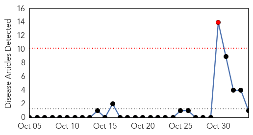
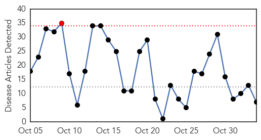
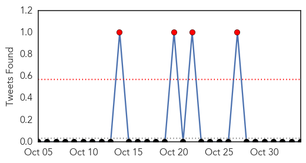
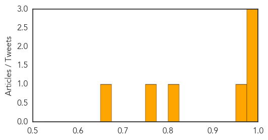

Bubonic Plague
30-Day Web Trend
1 alerts, 0 warnings

30-Day Twitter Trend
1 alerts, 0 warnings

Article Locations
Article Confidences

Top Articles:
Top Tweets:
-
No tweets found for Nov 03, 2015
Influenza
30-Day Web Trend
1 alerts, 0 warnings

30-Day Twitter Trend
2 alerts, 0 warnings

Article Locations
Article Confidences
Top Articles:
- 0.997
- Some additional facts on the flu vaccine
- 0.996
- What You Need to Know About This Year's Flu Season
- 0.992
- Seniors need to get their flu shots NOW!
- 0.973
- Statin use weakens flu vaccine potency
- 0.800
- Next Arnprior blood clinic Nov. 18
- 0.758
- Flu Vaccine Less Effective in Seniors Taking Statins
- 0.661
- Combination of Social Media and EHR Data Enables Real-Time Flu Tracking
Top Tweets:
-
No tweets found for Nov 03, 2015